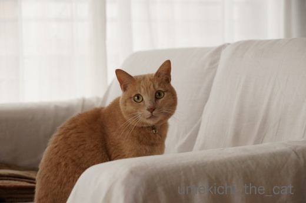

施設点検のおっちゃんがやってきた！ [梅吉]
先日はマンションの消防施設の点検の日でした。
朝から廊下に響くサイレンの音にちょっとドギマギの梅吉さん。
ながーい点検用の棒を持ったおっちゃんが家に入っていくると・・・
煙感知器に向かって棒を振り上げると目で追います。

目が離せませんか(≧ω≦｡)
ガン見してますw
おっちゃんのお仕事を一見クールに見つめている様ですが
おしっぽぼわん！でした(^▽^;)
今年はおっちゃんの足にガブガブしようとしなかったなー。
梅吉も大人になったのか私の教育が行き届いたのか・・・
煙感知器のサイレン音よりも気になるのが避難用の縄ばしごを「カラカラ」と巻き上げる音。
その音が聞こえてくる玄関の方をずーーーっと見つめていました。
おつかれさんwww
最近よく見られる光景。
起き抜けにブランケットを引きずりながら歩いて来ます。
チャンピオンのガウンみたいだねー(*>艸<)
週末に近所の神社で「大根炊き」をいただいてきました。
家庭のお味〜♡
大根はダシがしっかりとしみこんで、おあげさんは甘く炊いてあって（それぞれ別鍋です）
とっても美味しかったです。
インフルエンザワクチンも打ったことだし今年の冬も病気しらずで乗り切りたいです。
2017-12-19 10:58
nice!(54)
コメント(23)

カフェオレ色の梅吉

梅吉 2023年8月10日 永眠


梅吉と出会った譲渡会

犬猫の理由なき殺処分ゼロ
妄想広告
UMEKICHI 光

爆発的に早い！
時々攻撃的！
Thanks to Mr.Boss365
爆発的に早い！
時々攻撃的！
Thanks to Mr.Boss365

梅吉さん♪しっぽがぶわわわん(#^.^#)
気になりますよねぇ～！
by きぃ (2017-12-19 12:33)
家の警備を担当してる梅吉さんとしては、見覚えのないおじさん達から
目を離すわけにはいきませんよねぇ(^O^)
シッポがぼわぼわになっても頑張った梅吉さん、お疲れ様でした<(_ _)>
うちは消防点検の時等は代表で大御所が様子見に来ます＾＾
そしてかなりの確率でその方達に「えっ？猫・・・ですよね？」って
二度見されますｗ
どうやら規格外のサイズのようです^^;
by ニッキー (2017-12-19 12:37)
大人しく、お利口に偵察していますね〜
私など梅吉さんと同じように棒の先をガン見していますが、
ちぃさんは見ている梅吉さんを撮っている風景を想像すると微笑ましいです。
ブランケットを引きずりながらも、すまし顔というのが梅吉さんらしく、
堂々としていいですね。
by kiki (2017-12-19 16:34)
施設点検のおじさん、梅吉さんとしては見逃せませんね！
大人しいようでシッポはぼわんん！＾o＾
きっちりガン見、お疲れさまでした。
おすまし顔でブランケットをゆうゆうと‥貴族のマントみたい＾＾
‥わ、味の染みた大根とおあげ‥美味しそうですねー！＾＾
by sana (2017-12-19 18:17)
我が家は1軒屋なので、判らないですがマンションは消防設備の点検があるのですね！
梅吉さん、ガン見しながら点検チェックですね(^^)
by ma2ma2 (2017-12-19 20:43)
わ～い、梅吉さんもたわしっぽ仲間ですね(^▽^;)
それにしても落ち着いてる・・・。
こたつの隅っこでかたまってるウチのビビリ猫とは梅吉さん器が違います(*^▽^*)
大根炊き、ふっくらお揚げさんもおいしそうです♪
by ゆきち (2017-12-19 20:53)
部屋に入ったおっちゃんをずっと監視してたのですね！^^;
お疲れ様です。
大根炊きってあるのですね。温まりそうです。^^)
by yes_hama (2017-12-19 21:58)
おっちゃんじゃなくて、女の人の方がいいんですね。
私と同じですか(^^;
お疲れさまでした、梅吉さん(^^)
by riverwalk (2017-12-19 22:40)
梅吉さんのたぬ尻尾は初めて見たような⋯。監視のお役目頑張りましたね。でも太くなった尻尾可愛いくって、ぎゅっと絞ってあげたいです。
by zombiekong (2017-12-20 00:10)
梅吉くん、点検の点検おつかれっした！（｀▽´）/
我が家だったら即「ねこのいない家」になるな・・・
それでもしっぽはぼわぼわ！なのですね（笑）
大根炊き、おいしそう♡
味付けはオリジナルにして、この組み合わせ
家でもやってみたいな（*´ー｀*）
by Ja-Kou66 (2017-12-20 00:30)
梅吉くんのしっぽがぼわわ～っとなってますねヽ(*´∀｀)ノ
監視中？ｗｗｗ
by sumi-cyan (2017-12-20 02:10)
めっちゃ気にしてますねぇ。
普段見ない動きですから
気になっちゃうのも分りますけど＾＾；
by ぽちの輔 (2017-12-20 06:26)
平気な顔して、おしっぽはぶわわん！^ ^
おしっぽってつい感情が出ちゃうんでしょうねぇ。
ブランケットかぶって歩く…よくあります。
「あーほらほら！踏んだら危ない、転んじゃうよ！」って追いかけますが
それで転んだらもう野生ゼロですよね^^;
by も〜 (2017-12-20 10:21)
何でもないふりしながらしっぽぼわんは可愛すぎです(*^。^*)梅吉くんお疲れさん!!
by palpal (2017-12-20 14:30)
梅吉君はガン見してるんだね！
うちの２ニャンは天袋に隠れて姿を消すよ(笑)
ガン見してるけど、しっぽが・・・ｗｗｗｗ
こうなっちゃうよね^m^
監視おつかれさま♪
by リュカ (2017-12-20 17:17)
可愛い～♪私が点検のおばちゃんだったら警報機になんて構ってられないわ～＞＜
って・・・。ちぃさんも梅吉くんに釘付けでおじさんの作業ほっぽらかし？ｗ
警報機は結構な音が出ますからね。しっぽぽわ～ん～♪
梅吉くん、ちぃさん、点検作業のおじさん。お疲れさまでした(≧▽≦)
by emi (2017-12-20 17:57)
梅吉君、ちゃんと作業を見届けてエライね～＾＾
クールなお顔をしてても、たわしっぽなところが
ｶﾜ(・∀・)ｲｲ!!
大根炊きってあるんですね。
ホクホクで美味しそうですね♪
あと、柚子のお風呂にはいったら完璧に
風邪知らずですね(*^^)v
by マーヤ (2017-12-21 00:21)
緊張感漂わせつつ、しっかり見届けでるのですね。
えらい、えらい！
大根がめっちゃ旨そうー(≧∀≦)
by よーちゃん (2017-12-21 08:00)
しっぽがリスさんに！やっぱり、お客様とそうでない人はわかるのねー。検査のおっちゃんにも、おもてなしガブしたら、それはそれで最高なのですが！
|￣m￣) ｳﾌﾟﾌﾟｯ
あらためて、首輪とっても素敵！よく似合ってる～♪
by Ginger (2017-12-21 13:59)
皆さま〜
コメントのお返事は明日ゆっくり書かせてくださいねm(_ _)m
年末ゆえ何かとやることが増えて来ました・・・
加えて最近梅吉の遊んでコールが増えている！なぜだー！！
by ちぃ (2017-12-22 17:18)
きぃさん＞
もうおっちゃんに目が釘付けでしたよ〜＾＾
ニッキーさん＞
梅吉（4.5kg）でも「男の子は大きいですね！」と言われたことがあるのですが
その方に大御所始めみなにゃんを見ていただきたい！
その方は女の子を飼っていたようなのですがアルさんを見たら
どれだけビックリするんだろう・・・
kikiさん＞
点検のおっちゃん「ああ、猫アホおばちゃんがいてるわ・・・」と
思って見ていたと思います^^;
うちのマンションの各家庭で飼っている
わんにゃんの反応を聞いて見たいところですが
梅吉撮影とおっちゃんの匂いを嗅ぎに行くのを制止するのに忙しく
それどころではありませんでしたw
sanaさん＞
私が買い物から帰って無言でそーっと怪しく入って行くと
全身ぼわーっと毛を逆立てて警戒の態勢になっています^^;
家に入ってくる知らない人は「けいかいせなあかん」とは思っているようですよ。
貴族のマント！それ良いですねー！！
チャンピオンよりだいぶ格上だしw
ma2ma2さん＞
消防設備点検、配管掃除と結構業者さんが家に出入りします^^;
掃除する機会が出来て良いかもしれませんw
ゆきちさん＞
短毛種なのであまり迫力はありませんが精一杯のたわしっぽです^^;
病院でもビビらない梅吉なので（シャーッ！は言いまくりますが）
おっちゃんごとき、軽い軽いだったのかもしれません・・・でもたわしっぽ(≧ω≦｡)
料理屋さんのものとは違う家庭のお味、なかなか口にする機会がないので
美味しさもひとしおでした。
なにより自分で作らないのがご馳走ですwww
yes_hamaさん＞
大根炊き、ちなみに「だいこんだき」ではなく「だいこだき」と読みます。
関西の神社仏閣では季節の風物詩のようであちこちでやっているのですよー。
近所の神社では寸志をそなえるのですが
京都の有名箇所に行くと一杯1500円なんて聞くので
ご利益も金次第ですか・・・なんて思っちゃいますwww
riverwalkさん＞女の人・・・私が怪しく家に入って行くと
全身総毛立って向かい打つ姿勢になっているので
そうでもないかもしれませんよー＾＾
自宅警備主任として「とりあえずきはぬけない」と
思っていたのかもしれませんw
zombiekongさん＞
おっちゃんをコワイとは思っていなかったような・・・
遊びの途中で興奮してたぬ尻尾になったりするので
スイッチがどこにあるのか飼い主も今ひとつわかりません^^;
おしっぽ「ぎゅっ！」かわりにやっておきましたよヾ(*ΦωΦ)ﾉ
Ja-Kou66さん＞
ああ・・・「ねこのいない家」になってほしいと何度思ったことでしょう・・
点検程度はすぐに済むので良いのですが
家電の修理などになるとその間30分から１時間
業者の方に絡もうとする梅吉を引き離し続けなければならず
何も出来ません( ；∀；)
ブログの下書きなどにちょうど良い空き時間なのに・・・
なんちゃて大根炊き、私もやって見ました。
再現率は低かったですがそれなりに美味しくいただきましたよ＾＾
sumi-cyanさん＞
大監視中です＾＾自宅警備員としては見逃せない出来事ですからー！
ぽちの輔さん＞
幼い頃はながーい点検棒が巨大猫じゃらしに見えていたのか
なんども飛びつこうとして・・・^^;
今回もおっちゃんが誘えば飛びついたかもしれません！
by ちぃ (2017-12-23 15:34)
も〜さん＞
王子の起き抜けブランケットは王侯貴族のガウンのような
佇まいなのでしょうか・・・(≧ω≦｡)
梅吉のおしっぽぶわわん！は遊んでいる途中でもなる時があるので
おっちゃんと遊ぶ気満々だったのかもー＾＾
palpalさん＞
今まで人が来てぼわん！になったことがなかったので
ちょっと新鮮でしたー＾＾
おっちゃんと遊ぶ気だったのかもしれませんーw
リュカさん＞
あー、梅吉もどこかに隠れてほしいです( ；∀；)
お仕事している人に付きまとうので私が付きっ切りで
引き離したりしなければならず他には何も出来なくなるのー。
監視する梅吉を監視するワタクシwww
by ちぃ (2017-12-23 17:37)
emiさん＞
あは♡梅吉の写真を撮るのに忙しく「おっちゃん勝手にやっといて！」
という感じでした^^;
今まで来た施設点検の人で梅吉をかまってくれる人はいなかったなぁ・・・
もっともそんなことしていたら仕事にならないですけどねー。
私もemiさんと同じく仕事なんてそっちのけで
にゃんこに（わんこも）夢中になってしまうタイプだわ(≧ω≦｡)
マーヤさん＞
逃げないところが自宅警備員としての矜持でしょうか(≧ω≦｡)
大根、美味しかったですよ！
人が作ってくれたものってどうしてあんなに美味しいのでしょう・・・
梅吉がお風呂の残り湯を舐めちゃうので我が家は入浴剤（ゆずも）など
入れられませーん（涙）
ゆずはお鍋の薬味としてたっぷりいただきました(^_－)☆
よーちゃん＞
いっしゅんたりとも めをはなさへんで との意気込みでございましたー＾＾
梅吉がお仕事の邪魔をしないように監視していなければならない私としては
逃げてくれれば良いのに・・・なんて思っちゃたりして(≧ω≦｡)
でもそうなるとブログネタにならない・・・ジレンマですっ！！
Gingerさん＞
たまーに私が怪しく家の中に入って行くと全身ぼわん！
で迎え撃つ態勢になっている時があるんですよー。
呼びかけるか、近くまで行って顔を認識すると「おかーさんかいな・・・」
と緊張を解くのですが知らない人だったら戦う！という気持ちはあるようです。
がんばる子や・・・( ；∀；)
首輪、付け替えた瞬間からしっくり馴染んでます(^_－)☆
by ちぃ (2017-12-24 08:59)